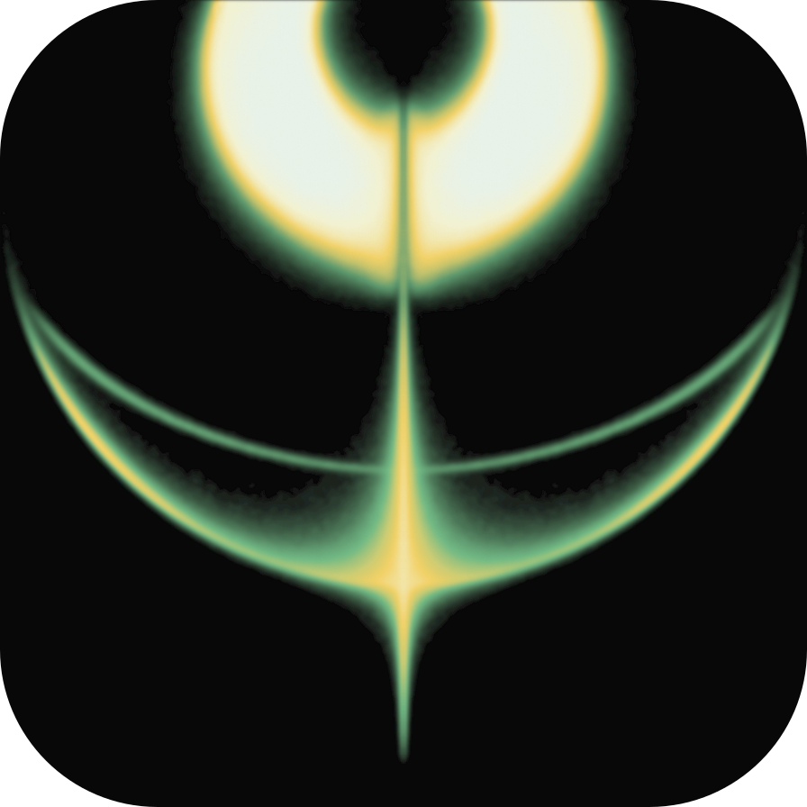

<!doctype html><html lang="zh-CN"><meta charset="utf-8"><meta name="viewport" content="width=device-width,initial-scale=1"><title>Aether · 绿白圆角图标</title><style>*{box-sizing:border-box}:root{background:#e9e9e5;color:#343c37;font-family:Arial,"PingFang SC",sans-serif}body{margin:0}header{min-height:62px;display:flex;align-items:center;gap:24px;padding:16px 26px;font-size:11px;letter-spacing:1.5px;flex-wrap:wrap}header span{flex:1}a{color:inherit;text-decoration:none}a:hover{text-decoration:underline}main{height:calc(100dvh - 62px);display:flex;align-items:center;justify-content:center;padding:22px}img{display:block;width:min(77vh,85vw);height:auto;max-height:100%;object-fit:contain}a:focus-visible{outline:1px solid;outline-offset:4px}@media(max-width:650px){header{gap:15px;font-size:10px;letter-spacing:.7px}header span{flex-basis:100%}main{height:calc(100dvh - 90px)}}</style><header><span>AETHER / AXIAL ICON</span><a href="index.html">绿白圆角</a><a href="flow.html">流光修订</a><a href="green-white-rounded.svg" target="_blank" rel="noopener">SVG</a><a href="green-white-rounded-3072.png" target="_blank" rel="noopener">3072 PX</a></header><main></main></html>